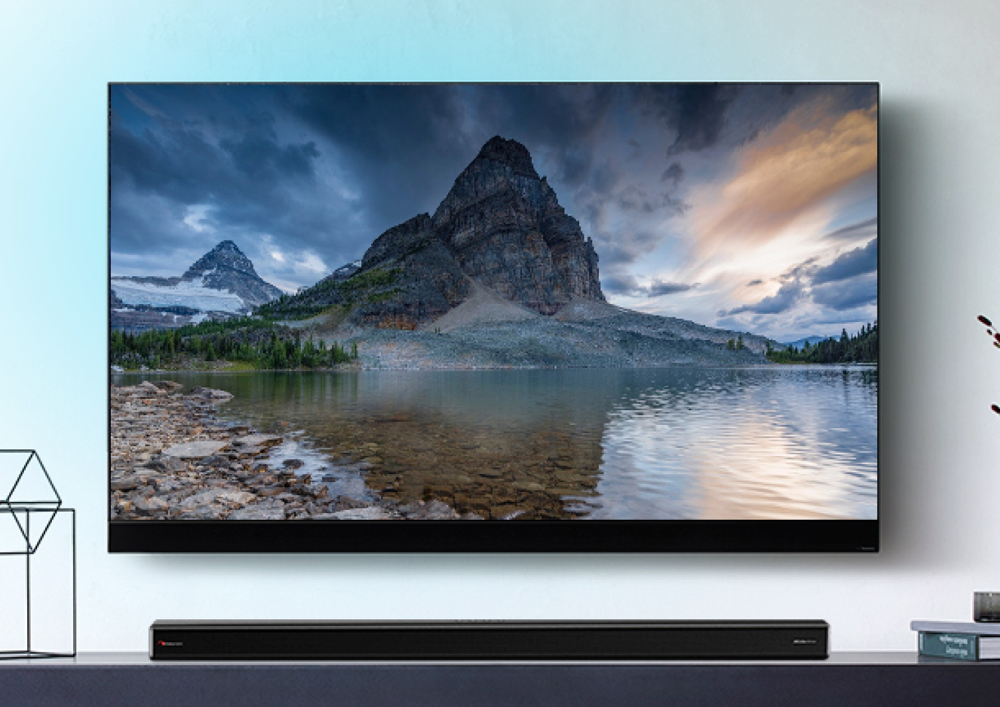
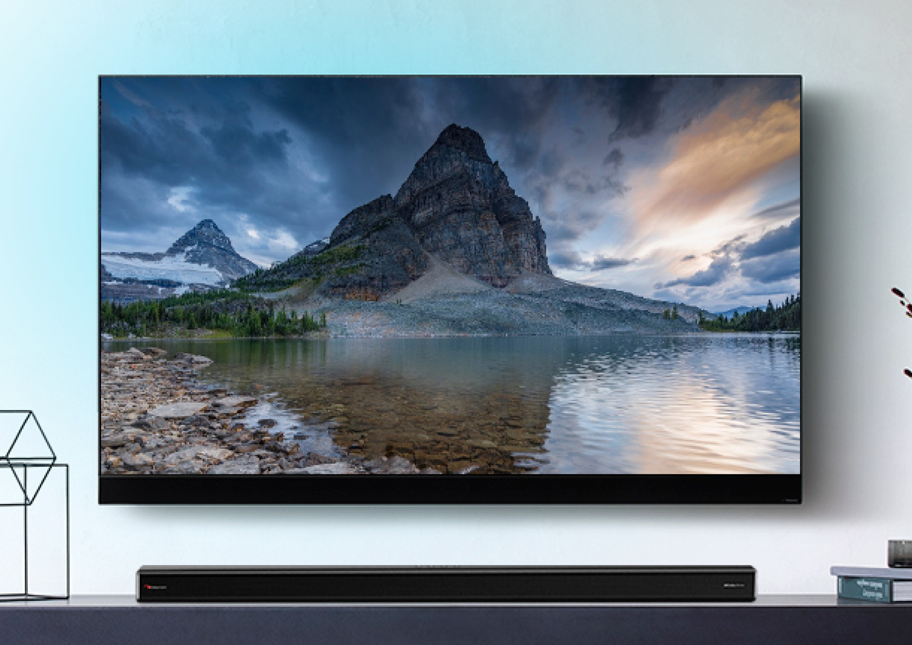

Nakamichi Apollo 520
Саундбар 5.1.2 CH с системой Dolby Atmos и беспроводным сабвуфером
Современный и лаконичный дизайн гармонично впишется в любой интерьер и прекрасно сочетается с внешним видом большинства современных телевизоров, Hi-Fi систем и «звуковой» мебели.
 

Звуковая панель может быть размещена рядом с телевизором на одной поверхности или на стене. Монтажные элементы крепления на стену имеются в комплекте.
Для работы системы достаточно подключить кабели питания панели и сабвуфера, выбрав один из вариантов сопряжения с телевизором: HDMI eARC*, HDMI, оптоволоконный кабель или коаксиальный.
Оптический и коаксиальный вход
Подключите кабель к оптическому или коаксиальному входу и наслаждайтесь высоким качеством звука.
ARC (Audio Return Channel) – создает двухсторонний канал связи между саундбаром и телевизором по кабелю HDMI без дополнительного использования оптического и других кабелей. *eARC – (enhanced Audio Return Channel) - по сути улучшенный
*eARC – (enhanced Audio Return Channel) - по сути улучшенный ARC с большей пропускной способностью канала и, соответственно, с поддержкой продвинутых звуковых форматов высокого разрешения. Способность пропускать сигнал с разрешением до 4К и поддержкой Dolby Vision HDR.

Автопробуждение
Если Apollo 520 подключен к телевизору или внешнему устройству (LINE IN / HDMI ARC), то он автоматически активируется при их включении.
Функция автоматического отключения питания
Apollo 520 автоматически переходит в режим ожидания Standby примерно через 15 минут, если телевизор или внешнее устройство отсоединяются или выключаются.
Воспроизведение с USB-флеш-накопителя
Apollo 520 поддерживает воспроизведение аудиоконтента с flash-накопителей через порт USB.
Подключение смартфонов и гаджетов

Телефоны

Игровые приставки
Умные колонки
Подключение к телефону
С помощью технологии Bluetooth V4.2 к Apollo 520 можно подключить смартфон с коллекцией любимой музыки или воспроизводить контент со стриминговых сервисов.
Получаем аудиосистему с комфортным качеством звучания!

Подключение к умной колонке
Для расширения системы предоставляется возможность подключить к Apollo 520 умные колонки. Например, Яндекс.Станцию, как дополнительный источник контента.
Подключение улучшит как качество, так и громкость звучания.
Подключение осуществляется с помощью кабеля jack 3,5 мм - jack 3,5 мм.

Подключите игровую приставку

Подключите к саундбару Apollo 520 игровую приставку и почувствуйте себя полноценным участником чемпионата FIFA или пилотом скоростного болида в Formula-1, благодаря трехмерному звуку и стереоэффектам.
Пульт дистанционного управления
Пульт входит в комплект. Дистанция работы - 6 метров. Питание - две батарейки ААА.


Управление осуществляется кнопками на верхней части звуковой панели
Индикация статуса системы находится на лицевой панели под декоративным покрытием корпуса и имеет 5 сегментов белого цвета.
(!) Если в течение 10 секунд не выполняется никаких действий, яркость дисплея автоматически уменьшится. При активации действий уровень яркости будет автоматически восстановлен.
Что обеспечивает объемное и реалистичное звучание системы?
Apollo 520 поддерживает систему цифрового многоканального звучания

Звуковая панель
В состав входит 8 динамических активных драйверов. Диапазон воспроизводимых частот 120 Гц – 20 кГц. Для усиления нижних частот в акустическом оформлении драйверов применен фазоинвертор.
Габаритные размеры панели: 1200 х 70 х 108 мм.
Настоящий 3D-звук
и Вы в его эпицентр
С помощью фронтальных акустических систем цифровая система Dolby Atmos воспроизводит объемный звук, который поступает со всех сторон. Нет необходимости добавлять тыловые акустические системы — вы можете наслаждаться звуком, как в кинотеатре, не загромождая жилое помещение.
Эквализация представлена фиксированными пресетами:
MOVE
Создает эффект объемного звучания. Идеально подходит для просмотра фильмов.
MUSIC
Создает двухканальный стерео- и многоканальный звук. Подходит для прослушивания музыкальных произведений.
NEWS
Cоздает эффект, который делает голос более четким и отлично подходит для новостей и прочих программ.
SPORT
Создает атмосферу, как если бы вы находились на стадионе.
Функция объемного звучания
Виртуально расширяет зону стереоэффекта.

Сабвуфер
Корпус сабвуфера изготовлен из МДФ с элементами пластика. Эффектный дизайн. Довольно массивный, что снижает резонансы при воспроизведении инфрабаса.
Акустическое оформление – Фазоинвертор. Динамическая головка 20 см с длинноходным подвесом.
Полоса воспроизводимых частот 40 – 120Гц. Номинальная мощность – 180 Вт.
Габаритные размеры сабвуфера: 240 х 420 х 240 мм.